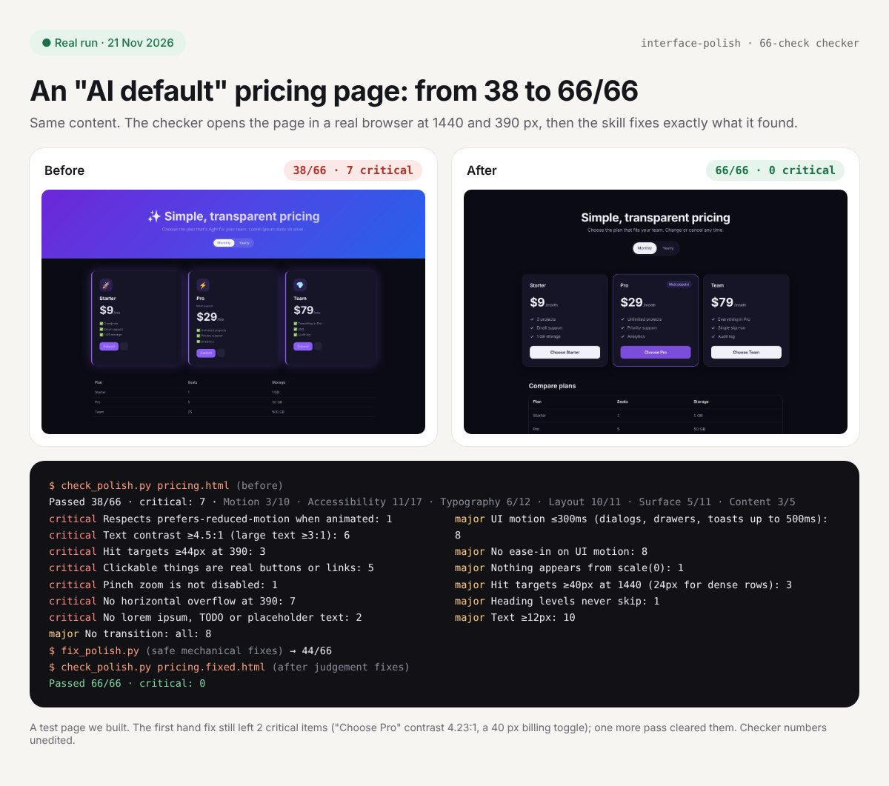

Cho product designer và PM đang dùng Claude
Claude làm lượt đầu. Second Pass kiểm lại.
40 skill và 38 script biến Claude thành một người cộng sự thiết kế cấp cao, kỹ tính. Nó đo độ tương phản, điều hướng bằng bàn phím, token thiết kế, tiêu chí WCAG và số liệu kiểm thử bằng trình duyệt thật hoặc bằng phép tính thật, rồi sửa đúng những gì tìm thấy.
Hoặc dùng thử 2 skill miễn phí. Trả một lần, cập nhật trọn đời. Chạy trên Claude.ai (Pro, Max, Team, Enterprise), Claude Code, Cursor và Codex. Giấy phép nhóm từ $149.
Chạy thật, số không chỉnh
Từ 38 lên 66 trên 66 mục, cùng một nội dung
Một trang bảng giá điển hình do AI làm. Máy kiểm mở trang ở bề rộng 1440 và 390 px, tìm ra 7 lỗi nghiêm trọng (chữ khó đọc, nút giả, chặn phóng to, tràn màn hình), và skill sửa đúng những lỗi đó.




Thử trên Claude.ai ngày 21/11/2026 bằng những câu hỏi bình thường, đúng như khách sẽ gõ. Skill nào lần đầu chưa tự bật, chúng tôi viết lại và thử lại.
Từ người đang dùng
Designer và PM nói gì
Ai làm sản phẩm này
Do một trưởng nhóm thiết kế đang làm nghề viết ra, cho lượt rà soát mà ta chưa bao giờ đủ thời gian làm
Second Pass do một trưởng nhóm thiết kế sản phẩm làm ra. Người này phụ trách trải nghiệm cho các sản phẩm AI và tuần nào cũng duyệt màn hình do AI dựng. Những lỗi cũ cứ lặp lại: chữ không đọc được, nút không phải là nút, trang vỡ trên điện thoại, số liệu nghiên cứu không có khoảng tin cậy. Mỗi skill biến một lần rà soát như thế thành một bước kiểm Claude tự chạy, và bước kiểm nào cũng được thử trên việc thật trước khi phát hành.
Câu hỏi gửi thẳng tới người làm: support@uiuxpass.com.
Khác ở đâu
Phần lớn bộ skill chỉ dặn Claude thế nào là đẹp. Bộ này kiểm lại.
Đo, không phán
Tương phản, viền chọn bàn phím, tràn khung, xô lệch bố cục, lệch token và khác biệt từng điểm ảnh được đo trong trình duyệt thật ở cả bề rộng máy tính và điện thoại. Claude báo con số và chỉ rõ chỗ.
Số liệu trung thực
Kết quả kiểm thử, khảo sát và A/B test luôn kèm khoảng tin cậy 95%, cảnh báo cỡ mẫu và cảnh báo xem kết quả quá sớm. Không có chữ "có ý nghĩa!" nếu thiếu khoảng tin cậy.
Dùng được ngay
Câu trả lời nào cũng mở đầu bằng kết quả, mọi lựa chọn đều có bảng lợi/hại và kết thúc bằng phần tự chấm, nên bạn chuyển thẳng cho nhóm được.
Bên trong có gì
40 skill trong năm bộ
Claude tự chọn skill phù hợp theo điều bạn hỏi. Skill có nhãn máy kiểm đi kèm script đo kết quả.
Bộ Chất lượng thiết kế
Bắt những lỗi làm sản phẩm trông dang dở hoặc gạt người dùng ra ngoài, trước khi phát hành.
interface-polishmáy kiểm66 mục kiểm trong trình duyệt cho mọi trang HTML (chuyển động, khả năng truy cập, chữ, bố cục, vẻ "AI làm") và chế độ tự sửa.
accessibility-auditmáy kiểmĐủ 55 tiêu chí WCAG 2.2 mức A và AA, mỗi tiêu chí ghi đạt, trượt, kiểm một phần hay cần người kiểm, kèm mã sửa. Không bao giờ tuyên bố "đạt chuẩn" sai.
design-system-checkmáy kiểmĐo mọi màu, cỡ chữ, khoảng cách và bo góc so với token của bạn: bao nhiêu phần trăm đúng token và từng giá trị cần đổi.
design-file-reviewmáy kiểmRà frame Figma và ảnh chụp màn hình trước khi viết mã: đo tương phản và cỡ vùng bấm, chỉ ra trạng thái còn thiếu, xếp thứ tự việc sửa.
design-qamáy kiểmSo từng điểm ảnh giữa bản dựng và bản thiết kế, có trang kéo để so và phiếu việc cho lập trình viên.
heuristic-ux-copy-review10 nguyên tắc Nielsen và chữ trên giao diện cho một màn hình hoặc cả luồng, có đo tương phản và dẫn nguồn.
motion-designmáy kiểmToken chuyển động, mẫu cho từng thành phần, phương án giảm chuyển động, và bản kê những gì trang thật sự đang chuyển động.
mobile-platform-guidelinesmớimáy kiểm12 mục kiểm trên khung iPhone và Android thật: vùng bấm 44 pt / 48 dp, ô nhập bị phóng to, vùng an toàn, thanh điều hướng dưới, chữ 200%, vùng ngón cái.
localizationmớimáy kiểmTìm chỗ thiếu bản dịch, biến chèn bị hỏng, chữ dài quá nút và thiếu dạng số nhiều; tạo bản dịch giả để thử độ chịu đựng của bố cục.
ux-writingmáy kiểmNút, thông báo lỗi, trạng thái trống và hộp xác nhận nói rõ điều sẽ xảy ra, có máy soát từng câu chữ.
Bộ Nghiên cứu & Sản phẩm
Quyết định bằng bằng chứng: nghiên cứu, kiểm thử, số liệu và đặc tả mà cả nhóm hành động được.
usability-testmáy kiểmLên kế hoạch, kịch bản và phân tích kiểm thử với người dùng thật: tỉ lệ thành công kèm khoảng tin cậy, điểm SUS, thứ tự ưu tiên lỗi.
user-interview-synthesismáy kiểmTối đa năm nhu cầu kèm số lần nhắc và trích dẫn nguyên văn, có máy kiểm chứng minh mọi trích dẫn đều có trong dữ liệu của bạn.
survey-researchmáy kiểmBảng khảo sát trung lập và kết quả kèm khoảng tin cậy 95%, NPS có khoảng tin cậy, sai số và cảnh báo khi nhóm quá nhỏ.
journey-mapmáy kiểmBản đồ hành trình và sơ đồ dịch vụ dựng từ bằng chứng, thành một trang dễ truy cập, tự đánh dấu chỗ còn thiếu bằng chứng.
product-discoverymáy kiểmViệc người dùng cần làm, cây cơ hội, giả định rủi ro nhất và điểm RICE, kèm phép thử xem thứ hạng có vững không.
experiment-analysismáy kiểmTrước A/B test: tính cỡ mẫu. Sau: mức tăng kèm khoảng tin cậy, kiểm chia nhóm lệch và kiểm xem kết quả quá sớm.
competitive-ux-benchmarkmáy kiểmThử cùng một việc trên mọi đối thủ, chấm điểm có bằng chứng, và chỉ ra khoảng cách lớn nhất theo thứ tự nên sửa.
product-specmáy kiểmĐặc tả và tài liệu bàn giao lập trình viên dựng được ngay: chỉ số có mốc hiện tại, tiêu chí Given/When/Then, đủ mọi trạng thái.
information-architecturemớimáy kiểmPhân tích card sort và tree test đúng cách (độ giống nhau, nhóm gợi ý, tỉ lệ thành công kèm khoảng tin cậy 95%, cú bấm đầu tiên), rồi dựng sơ đồ trang bằng chính từ ngữ người dùng.
user-flows-wireframesmớimáy kiểmThiết kế đủ mọi lối đi trước khi làm đẹp: máy kiểm tìm ngõ cụt và trạng thái trống, đang tải, lỗi còn thiếu, kèm khung xám cho từng màn hình.
onboarding-activationmớimáy kiểmGọi tên khoảnh khắc người dùng "thấy giá trị", rà đường đi tới đó qua 8 mục kiểm và thiết kế lại để người mới tới nhanh hơn.
product-analytics-funnelmớimáy kiểmPhễu kèm khoảng tin cậy 95% và thời gian giữa các bước, tỉ lệ giữ chân theo nhóm, máy soát kế hoạch đo; bước tệ nhất trở thành câu hỏi thiết kế.
ai-feature-designThiết kế tính năng AI cho lúc mô hình sai: đặc tả từng khoảnh khắc, mức kiểm soát tương xứng với rủi ro.
ai-assistant-ux-auditDùng thử và đánh giá sâu một trợ lý AI: chạy lặp, chấm lại không nhìn điểm cũ, bản đồ 10 khoảnh khắc và phiếu điểm.
Bộ Thương hiệu & Trình bày
Học thương hiệu của bạn một lần, rồi làm slide, brochure, báo cáo và ảnh mạng xã hội luôn đúng thương hiệu.
brand-kitmáy kiểmThương hiệu của bạn thành token và trang xem trước đã kiểm tương phản, đọc từ bộ nhận diện, một trang web hoặc chỉ một ảnh chụp; hoặc tạo thương hiệu mới từ năm câu hỏi.
ui-style-librarymáy kiểm36 bảng màu, 30 cặp font và 20 công thức phong cách, đều đạt AA ở nền sáng và tối. Ba hướng đặt cạnh nhau để chọn.
presentation-deckmáy kiểmSlide trong một tệp HTML: cuộn đọc hoặc trình chiếu, màn hình người trình bày, sửa tại chỗ, xuất PDF và PowerPoint.
print-brochuremáy kiểmBrochure A4 hoặc A5 gấp đôi, có tệp PDF để in, lề xén 3 mm và dấu cắt.
web-reportmáy kiểmBáo cáo dạng trang web: kết luận lên đầu, số liệu có nguồn, ghi chú cách làm và độ tin cậy.
social-graphicsmáy kiểmBài đăng, carousel và banner đúng thương hiệu, xuất PNG đúng kích thước, có kiểm độ dễ đọc.
product-videomớimáy kiểmVideo và GIF ra mắt viết bằng HTML rồi xuất MP4: kiểm chữ đọc được, vùng an toàn, thông điệp hiểu trong 2 giây và phụ đề.
design-case-studyCase study cho portfolio theo mạch Trước – Trong – Sau, mỗi quyết định kèm lý do.
Bộ Design System & Figma
Từ một màu tới một hệ thống hoàn chỉnh, dễ truy cập, cả trong mã lẫn trong Figma.
design-system-startermớimáy kiểmToken, giao diện sáng và tối, preset Tailwind, biến Figma, DESIGN.md và mọi thành phần ở mọi trạng thái, mọi cặp màu đạt WCAG AA. Kèm sẵn ba hệ thống dùng ngay.
figma-buildmớiGhi kết quả vào Figma: token thành biến thật với chế độ sáng và tối, bản mẫu thành frame, nhận xét rà soát đặt cạnh đúng frame.
Lõi
Cách làm việc nối mọi skill lại với nhau.
get-startedmớiViệc nên thử đầu tiên: hai phút xem Claude đo một trang thật, sửa rồi đo lại (39 lên 66 trên 66 mục trong lần chạy của chúng tôi), hoặc chọn đúng skill cho thứ bạn đang có.
second-pass-workflowĐích, tiêu chí thành công, người giỏi nhất làm gì, ràng buộc cố định, kết quả: việc nào cũng vậy, lần nào cũng vậy.
self-reviewmáy kiểmNăm câu hỏi và so với bài mẫu hàng đầu trước khi giao bất cứ thứ gì.
prototype-five-directionsNăm bản mẫu chạy được, khác nhau thật sự, từ một yêu cầu; đề xuất hai bản tốt nhất.
product-writingBài đăng, đề xuất và báo cáo tiến độ có một thông điệp chính và một bước người đọc làm được ngay hôm nay.
open-imagesmớimáy kiểmẢnh thật có giấy phép mở (CC0, public domain, CC BY) kèm sẵn dòng ghi công, và máy kiểm xem mọi ảnh trên trang đã ghi công đúng yêu cầu của giấy phép chưa.
Xem kết quả thật
Mở thử những gì skill làm ra
Đây là tệp do skill tạo, không phải ảnh dựng. Nội dung mẫu bằng tiếng Anh. Xem cả thư viện kèm câu lệnh để chép (EN).
Tự kiểm trang của bạn, miễn phí
16 mục đo ngay trong trình duyệt · không tải gì lên
Bộ slide trình chiếu được
presentation-deck · bấm P để trình chiếu
Kết quả kiểm thử người dùng
usability-test · khoảng tin cậy và SUS
Trang báo cáo nghiên cứu
web-report · kết luận lên đầu
Bản đồ hành trình
journey-map · đường cảm xúc và hàng bằng chứng
So sánh trải nghiệm với đối thủ
competitive-ux-benchmark · phiếu điểm có trọng số
So bản dựng với thiết kế
design-qa · kéo để so, chỗ khác tô đỏ
Design system sáng và tối
design-system-starter · mọi thành phần, bảng tương phản
Luồng người dùng kèm khung xám
user-flows-wireframes · sơ đồ luồng và trạng thái
Video ra mắt 12 giây
product-video · dựng từ HTML
So sánh thẳng thắn
Second Pass và các lựa chọn miễn phí
Có những skill thiết kế miễn phí rất tốt và bạn nên thử. Đây là chỗ Second Pass khác, và chỗ không khác.
| Claude không có skill | Skill thiết kế miễn phí phổ biến | Second Pass | |
|---|---|---|---|
| Hướng dẫn thiết kế và gợi ý phong cách | Có | Có, thường là thư viện lớn | Có: 36 bảng màu, 30 cặp font, 20 phong cách |
| Đo trang trong trình duyệt thật | Không | Một số, thường vài mục | 66 mục, đối chiếu WCAG 2.2, kiểm token và điểm ảnh |
| Thống kê cho nghiên cứu và kiểm thử | Ước lượng bằng lời | Hiếm | Khoảng tin cậy, SUS, NPS, A/B test, độ vững của RICE |
| Đặc tả, hành trình, so sánh đối thủ cho PM | Tuỳ lúc | Hiếm | Khuôn mẫu kèm máy kiểm |
| Design system và Figma | Giá trị tuỳ tiện | Một số có tạo hệ thống | Token đã chứng minh tương phản, sáng và tối, ghi vào Figma thành biến |
| Chạy trên Cursor và Codex | — | Thường có | Có, cùng bộ skill |
| Giá | Có sẵn trong gói Claude | Miễn phí | $49 một lần, cập nhật trọn đời |
| Chỗ còn thiếu | Second Pass còn mới: chưa có đánh giá công khai. Trên Claude.ai, công cụ Slides và Design có sẵn sẽ nhận yêu cầu làm slide và thiết kế, trừ khi bạn gọi tên skill. Chúng tôi nói trước điều này. | ||
Giá
Trả một lần. Trọn bộ, trọn đời.
Không thuê bao. Mọi skill đang có và mọi skill thêm sau này.
Second Pass trọn đời
$49 một người, trả một lần
- 1 người
- $49
- Nhóm đến 5 người
- $149
- Nhóm đến 20 người
- $299
- Đủ 40 skill và 38 script kiểm
- Bộ Design System: ba hệ thống dùng ngay, dễ truy cập
- Cài bằng một tệp trên Claude.ai, kèm Claude Code, Cursor và Codex
- Mọi skill mới và bản cập nhật sau này, miễn phí
- Giá tự giảm theo nước khi thanh toán: thẻ Việt Nam chỉ khoảng 506.000đ cho 1 người
Thanh toán an toàn qua Gumroad bằng thẻ quốc tế. Chọn 1 người hoặc giấy phép nhóm khi thanh toán. Đã mua không hoàn tiền, nên hãy dùng thử bản miễn phí trước.
Dùng thử miễn phí trước
Hai skill đầy đủ, không mánh lấy email: heuristic-ux-copy-review và self-review.
Câu hỏi
Hỏi đáp
Tôi cần gì để dùng?
Một gói Claude trả phí (Pro, Max, Team hoặc Enterprise) có bật chạy mã, hoặc Claude Code. Trên Claude.ai bạn tải một tệp lên ở Plugins → Add → Upload plugin, mất khoảng năm phút. Máy kiểm chạy ngay trong môi trường của Claude, bạn không phải cài gì.
Có dùng với Figma được không?
Được, cả hai chiều. Xuất một frame ra PNG là design-file-review đo được. Khi đã nối Figma với Claude, skill đọc được frame và biến, còn figma-build ghi ngược lại: token thành biến Figma có chế độ sáng và tối, bản mẫu thành frame, nhận xét đặt cạnh frame.
Có chạy trên Cursor hay Codex không?
Có. Các skill theo chuẩn mở Agent Skills. Chạy npx skills add ./skills trong thư mục đã tải và chọn công cụ của bạn, hoặc chép các thư mục vào ~/.codex/skills hay .cursor/skills.
Claude có tự dùng skill không?
Phần lớn là có: mỗi skill tự bật từ câu hỏi bình thường ("trang này có dễ truy cập không?", "phân tích A/B test này"). Với slide, thiết kế và ảnh mạng xã hội, Claude.ai có thể mở công cụ có sẵn của nó; chỉ cần gọi tên skill ("dùng presentation-deck…") là được. Hướng dẫn kèm theo có giải thích.
Tôi hỏi bằng tiếng Việt được không?
Được. Skill viết bằng tiếng Anh, nhưng Claude trả lời bằng ngôn ngữ bạn dùng để hỏi, kể cả báo cáo và chữ trên giao diện.
Tôi đã dùng Claude Design, có cần bộ này không?
Hai thứ làm hai việc khác nhau. Claude Design dựng bản đầu của màn hình, slide hay trang web. Second Pass kiểm thứ đã dựng, dù dựng bằng cách nào: đo độ tương phản, kích thước vùng bấm, điều hướng bằng bàn phím và bố cục trong trình duyệt thật, sửa chỗ chưa đạt và cho thấy điểm trước, sau khi sửa. Nhiều người dùng cả hai: Claude Design để dựng, Second Pass để kiểm trước khi đưa ra.
Đây có phải sản phẩm của Anthropic không?
Không. Second Pass là sản phẩm độc lập của UI/UX Pass, không liên kết hay được Anthropic bảo trợ. Claude là nhãn hiệu của Anthropic.
Cả nhóm tôi dùng chung được không?
Được, với giấy phép nhóm: đến 5 người giá $149, đến 20 người giá $299, chọn khi thanh toán. Giấy phép $49 dành cho một người. Xin đừng bán lại hay chia sẻ công khai.
Có hoàn tiền không?
Không. Second Pass là tệp tải về ngay nên đã mua thì không hoàn tiền. Hãy dùng thử 2 skill miễn phí trước để xem cách làm việc. Nếu có gì không chạy đúng như mô tả, gửi thư tới support@uiuxpass.com, chúng tôi sẽ sửa.